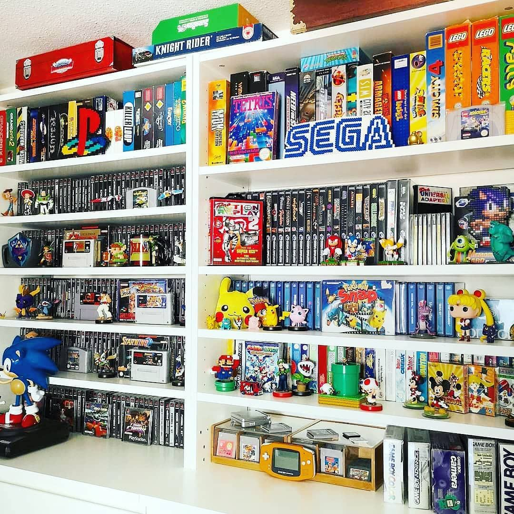

Different types of game memorabilia

There are multiple different individual types of memorabilia that can be collected within game collecting; some of the different types of collectables are,
- Game consoles are devices that output a video signal to display video games. There are two main types of video game consoles. Home consoles are connected to a display device and controlled with a game controller. Handheld consoles have everything required for playing games built into the console and can be moved around and played wherever.
- Video games are interactive games that require interaction with an input device of some kind to play. Video games are separated into different genres based on the content within them, some of the genre’s games can be are platformers, RPGs, sports, and fighting games. Most games either come in physical cases with either a disc or cartridge or can be bought at a digital storefront.
- Controllers are the physical input devices that are used to interact with the game console and the video games themselves. Most consoles are automatically bundled with at least one controller. Some examples of the different types of game controllers are gamepads, arcade sticks, racing wheels, mouse and keyboards, and motion sensors. >To learn even more about the different types of controllers use the link providedhere.
- Game guides are physical books that usually contain tips, walkthroughs, or strategies for a specific game. Most game guides contain an explanation of most of the video game's features and content within it. The guides usually also provide step-by-step explanations on the various chapters and stages that the game contains.
- Figures, plushies and other different collectables are merchandise produced to usually promote or merchandise a video game franchise. These are usually made during the time the game was originally produced. These collectables are great if you enjoy a certain franchise or game series to display them as a collection.
Use this linkto return to the main page
Return home